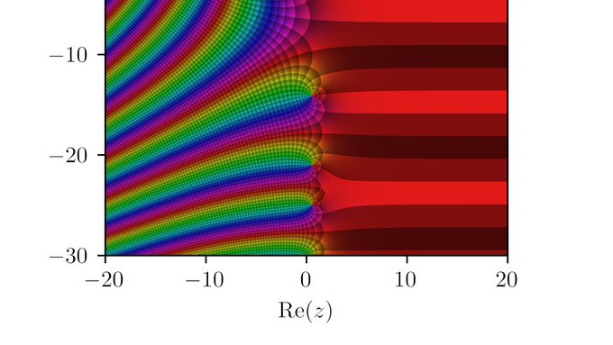

33 Mathematics
33.1 Riemann Zeta Function
Ian Wright
The relation between Riemann zeroes and primes is provable but mysterious. A bridge from perfect continuity to perfect discreteness. Excitement here about a new interpretation of zeroes. I’ll attempt to understand it, but I’m a relative amateur and this work is highly technical.
Baez
Pólya suggested that the nontrivial zeros of the Riemann zeta function should correspond to the eigenvalues of some interesting self-adjoint operator. Since then there’s been a lot of work looking for this operator. This might give a physics-inspired proof of the RH

33.2 Wolfram’s Ruliad
Wolfram
The Entangled Limit of Everything
I call it the ruliad. Think of it as the entangled limit of everything that is computationally possible: the result of following all possible computational rules in all possible ways. It’s yet another surprising construct that’s arisen from our Physics Project. And it’s one that I think has extremely deep implications—both in science and beyond.
In many ways, the ruliad is a strange and profoundly abstract thing. But it’s something very universal—a kind of ultimate limit of all abstraction and generalization. And it encapsulates not only all formal possibilities but also everything about our physical universe—and everything we experience can be thought of as sampling that part of the ruliad that corresponds to our particular way of perceiving and interpreting the universe.
We’re going to be able to say many things about the ruliad without engaging in all its technical details. (And—it should be said at the outset—we’re still only at the very beginning of nailing down those technical details and setting up the difficult mathematics and formalism they involve.) But to ground things here, let’s start with a slightly technical discussion of what the ruliad is.
In the language of our Physics Project, it’s the ultimate limit of all rulial multiway systems. And as such, it traces out the entangled consequences of progressively applying all possible computational rules.
In thinking about finding a fundamental theory of physics, one thing always bothered me. Imagine we successfully identify a rule that describes everything about our universe. Then the obvious next question will be: “Why this rule, and not another?” Well, how about if actually the universe in effect just runs every possible rule? What would this mean? It means that in a sense the “full story” of the universe is just the ruliad.
But the ruliad contains everything that is computationally possible. So why then do we have the perception that the universe has specific laws, and that definite things happen in it?
It all has to do with the fact that we are bounded observers, embedded within the ruliad. We never get to see the full ruliad; we just sample tiny parts of it, parsing them according to our particular methods of perception and analysis. And the crucial point is that for coherent observers like us, there are certain robust features that we will inevitably see in the ruliad. And these features turn out to include fundamental laws of our physics, in particular general relativity and quantum mechanics.
How should we think about the ruliad mathematically? In many ways, the ruliad is more an object of metamathematics than of mathematics itself. For in talking about the effects of all possible rules, it in a sense transcends individual mathematical theories—to describe a kind of metatheory of all possible theories.
33.3 Motion as Contradiction
Wright
Scientific laws are almost always expressed as differential systems. A differential system describes a causal structure with the power to control a variable. Integration, in effect, activates the power, generating change in that variable over time. The causal structure is a feedback loop that changes what it controls, and therefore what it controls changes. Numerical integration illustrates, in discrete steps, how the loop’s output becomes its new input. The derivative, as a component of the loop, represents a potential that does not exist. The causal structure, when it exercises its power, brings the potential into actual existence.
The closed-loop solution. Motion is logically possible because (i) reality can form closed-loops, where (ii) a component A represents the non-existence of the state of another component B, and (iii) the causal structure of the loop is such that the state of B becomes that which A represents.
In consequence, although the arrow-in-flight is where it is and is not where it is not (as Zeno pointed out) it is also potentially not where it is (as Aristotle suggested).
This is a Hegelian solution to Zeno’s paradox in disguise, albeit refined by the mathematics of the calculus. For example, we can restate the closed-loop solution using Hegel’s concepts. The entire system constitutes a “dialectical unity of opposites”. The derivative is a “moment” within this unity, symbolizing non-being, or “nothingness.” The control variable is another “moment”, symbolizing being. Being and non-being are in real contradiction (they are “opposed determinations”). They each “vanish” into the other: non-being becomes being, and being becomes non-being. The system is therefore “self negating”, not in a strictly logical sense, but in the sense of having the power to change itself. The negation is itself negated, repeatedly. And so the real contradiction resolves itself as a process of change over time, or “becoming”.
According to Plato, existence is nothing but the power to produce or undergo change. And Hegel argues, in the Science of Logic, that everything that exists must be a contradictory unity of being and nothing – which is becoming. Hegel and Marx devoted considerable attention to the philosophical implications of the calculus because they saw deep parallels to the dialectic. If we agree with Engels that
“Dialectics is nothing more than the science of the general laws of motion and development of nature, human society and thought”
then the calculus, properly interpreted, is a mathematical formalization of the dialectical theory of change. For every differential equation is a real contradiction. And Hegelian dialectics is no “dead dog” but has, all along, been hiding in plain sight.
The snake devours its own tail.
“Suppose a contradiction is pointed out in any sort of object or concept (and there is simply nothing anywhere in which a contradiction, i.e. opposite determinations, could not and would not have to be pointed out …) When such a contradiction is recognized, the conclusion is usually drawn that ‘Therefore, the object is nothing’, just as Zeno first demonstrated with regard to movement, namely that it contradicts itself and that therefore it does not exist … This kind of dialectic thus merely stops at the negative side of the result and abstracts from what is at the same time actually on hand, namely a determinate result, here a pure nothing, but a nothing that contains being and likewise a being that contains nothing within itself. Thus, existence is (1) the unity of being and nothing in which the immediacy of these determinations has disappeared and with it the contradiction in their relationship, — a unity in which they are now only moments. (2) Since the result is the sublated contradiction, it is in the form of a simple unity with itself or itself as being, but a being with negation or determinateness.”
Hegel, “Encyclopedia of the Philosophical Sciences in Basic Outline, Part 1: Science of Logic”, §89, p. 145. Cambridge University Press.
Wright (2023) Motion as contradiction: Zeno, Hegel and the calculus